- Azua
- Senator: Lía Ynocencia Díaz Santana
- Population: 22,610
- Coat of arms:

- Bahoruco
- Senator: Melania Salvador Jiménez
- Population: 101,306
- Coat of arms:
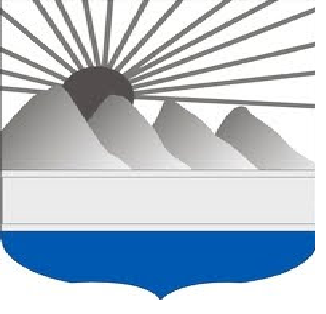
- Barahona
- Senator: José Manuel del Castillo Saviñón
- Population: 189,100
- Coat of arms:
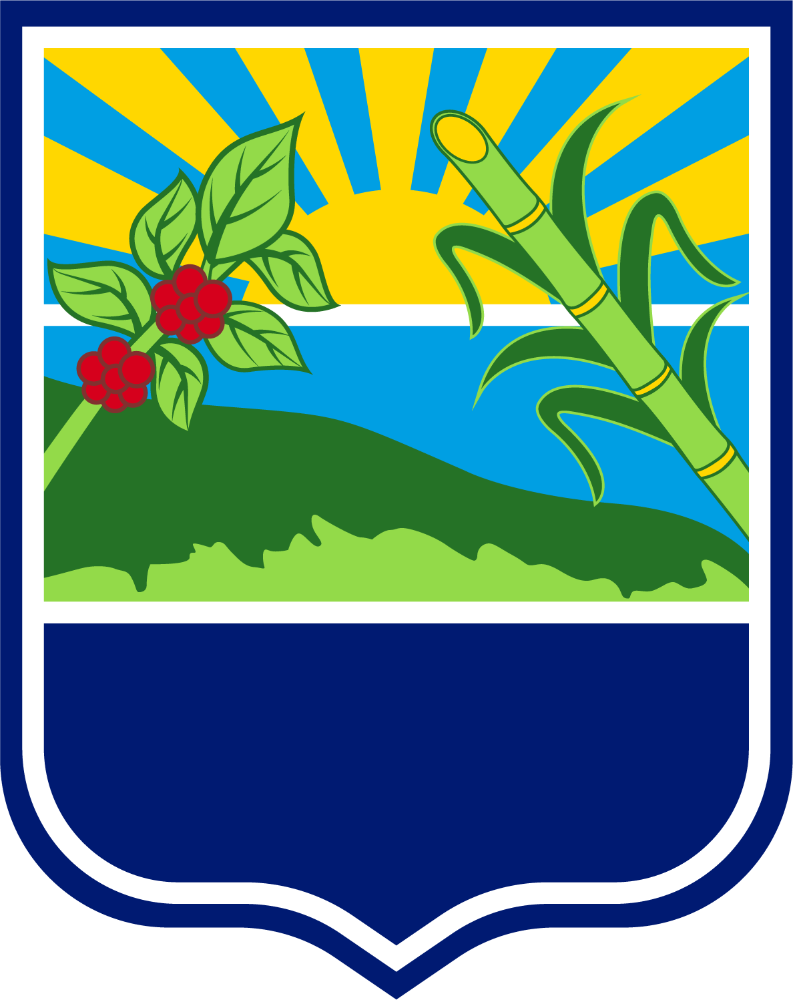
- Dajabón
- Senator: David Rafael Sosa Cerda
- Population: 66,675
- Coat of arms:

- Distrito Nacional
- Senator: Faride Virginia Raful
- Population: 1,049,567
- Coat of arms:
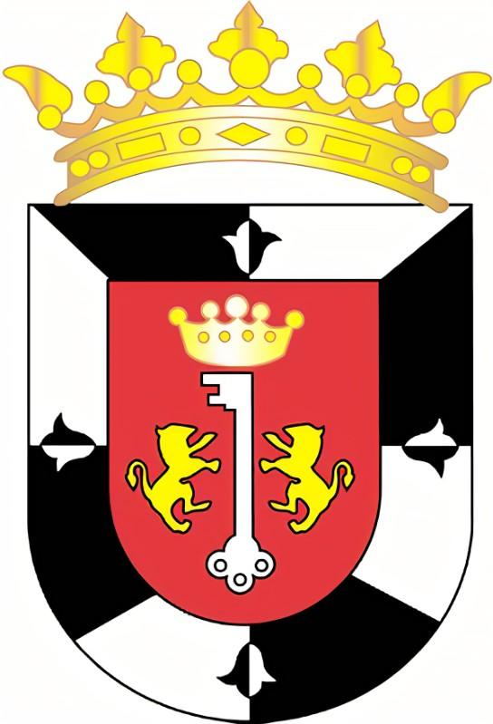
- Duarte
- Senato: Franklin Martín Romero Morillo
- Population: 299,583
- Coat of arms:
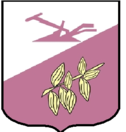
- Elías Pina
- Senator: Aris Yvan Lorenzo
- Population: 63,303
- Coat of arms:
- El Seibo
- Senator: Santiago José Zorrilla
- Population: 94,049
- Coat of arms:
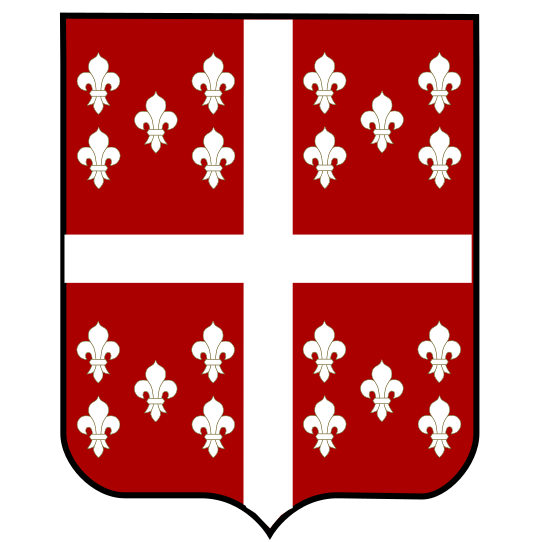
- Espaillat
- Senator: Carlos Manuel Gómez Ureña
- Population: 240,428
- Coat of arms:
- Hato Mayor
- Senator: Cristóbal Venerado Castillo
- Population: 85,747
- Coat of arms:
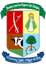
- Hermanas Mirabal
- Senator: Bautista Antonio Rojas Gómez
- Population: 92,045
- Coat of arms:
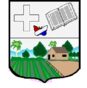
- Independencia
- Senator: Valentin Medrano Pérez
- Population: 58,951
- Coat of arms:
- La Altagracia
- Senator: Virgilio Cedano Cedano
- Population: 360,874
- Coat of arms:
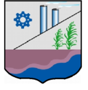
- La Romana
- Senator: Iván José Silva Fernández
- Population: 274,894
- Coat of arms:
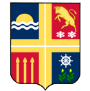
- La Vega
- Senator: Ramón Rogelio Genao Durán
- Population: 412,469
- Coat of arms:
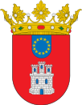
- Maria Trinidad Sanchez
- Senator: Alexis Víctoria Yeb
- Population: 140,954
- Coat of arms:
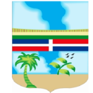
- Monseñor Nouel
- Senator: Hector E. Acosta
- Population: 174,959
- Coat of arms:
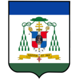
- Monte Cristi
- Senator: Ramón A. Pimentel Gómez
- Population: 117,736
- Coat of arms:
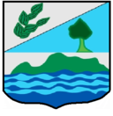
- Monte Plata
- Senator: Lenin Valdez López
- Population: 191,447
- Coat of arms:
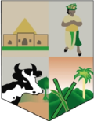
- Pedernales
- Senator: Dionis A. Sánchez Carrasco
- Population: 35,280
- Coat of arms:
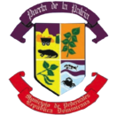
- Peravia
- Senator: Milcíades M. Franjul
- Population: 198,499
- Coat of arms:
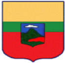
- Puerto Plata
- Senator: Ginnette Altagracia Bournigal
- Population: 333,940
- Coat of arms:
- Samaná
- Senator: Pedro Catrain Bonilla
- Population: 113,036
- Coat of arms:
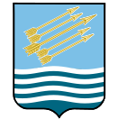
- Sánchez Ramírez
- Senator: Ricardo De Los Santos
- Population: 151,888
- Coat of arms:
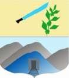
- San Cristóbal
- Senator: Franklin Alberto Rodríguez
- Population: 643,595
- Coat of arms:

- San José de Ocoa
- Senator: José Antonio Castillo Casado
- Population: 53,833
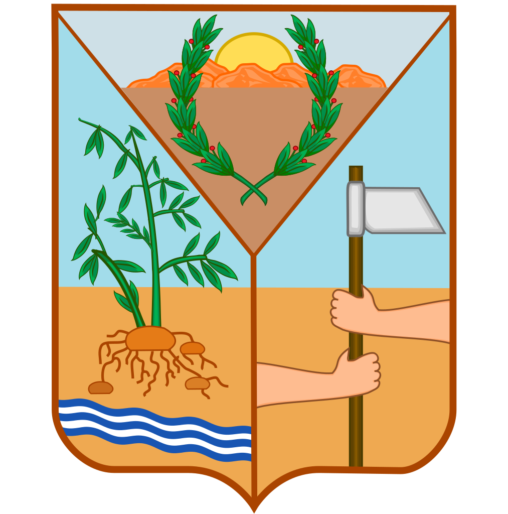
- San Juan
- Senator: Félix Bautista Rosario
- Population: 220,264
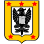
- San Pedro de Macorís
- Senator: Franklin Peña Villalona
- Population: 306,002
- Coat of arms:

- Santiago
- Senator: Eduardo Estrella Virella
- Population: 1,052,088
- Coat of arms:
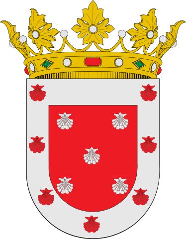
- Santiago Rodríguez
- Senator: Casimiro Antonio Marte Familia
- Population: 57,209
- Coat of arms:

- Santo Domingo
- Senator: Antonio M. Taveras Guzmán
- Population: 2,955,339
- Coat of arms:
- Valverde
- Senator: Martín E. Nolasco Vargas
- Population: 177,865
- Coat of arms: